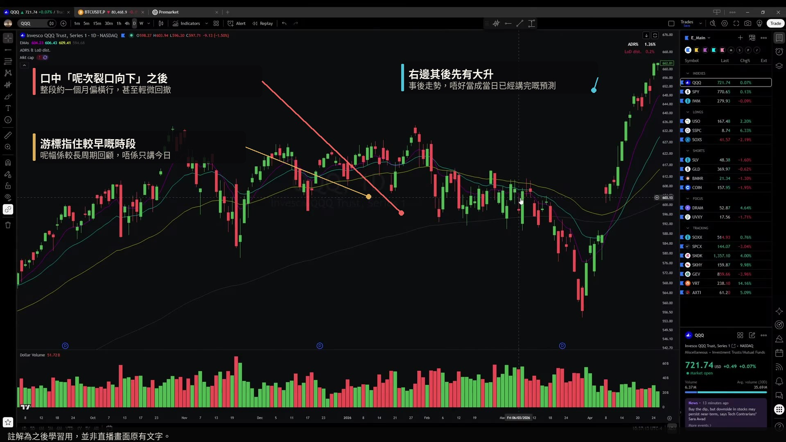

概要
冇 traction 嘅時段，往往靠縮細同少做
有人問：如果做多冇 traction 就轉淡、反之亦然，咁冇 traction 要等多耐。佢話自己正正係呢類時段會更常直播，因為不斷試新交易。最近一次係呢次裂口向下之後，大約成個月偏橫行，甚至有輕微回撤，主要因為裂口前持有一啲做多。呢類時段就係純粹沮喪。亦提起二月至三月初：寬幅 K 線、一日上一日落，反彈就試淡，最後雖然崩潰，但試太多次。可以做嘅係，當權益曲線做唔到更高高點、甚至變成更低高點同更低低點，就縮細或者少做。佢承認對呢類市場冇很好嘅方案。
畫面係較長周期嘅 QQQ 日線，游標指住較早時段。右邊其後先有大升，只係事後走勢，唔好當成當日預測。
圖一
較長周期回顧：裂口之後嘅橫行
直播 1:16:10

原話
Do you have a time frame of no traction? For example, 1 week, 2 weeks no traction. Yes, I think I actually stream a lot when I got no traction because I keep trying to make new trades. The recent one is this one from after this gap down. After this gap down for like the whole month, I've been going sideways. Actually maybe in a slight drawdown. But it's also mainly because of this gap down too, because I think I'm holding some longs before this gap down. And also I think on February to early March as well. Like these chops, wide candles, and up one day, down one day. I keep trying to short on the bounce, but eventually it did collapse, but it just takes too many tries. What I can do is trying to scale down or trade less when my equity curve is not making a higher high, or it's making a lower high and a lower low. Then maybe it's time to slow down a little bit. I don't have a really good solution on this type of market.
你有冇一個冇 traction 嘅時限？例如一星期、兩星期。有。我其實往往喺冇 traction 嘅時候直播得更密，因為我不斷試新交易。最近一次就係呢次裂口向下之後。裂口之後大約成個月，我一路偏橫行。其實可能仲有輕微回撤。不過亦主要因為呢次裂口，因為我記得裂口前持有一啲做多。而且我覺得二月至三月初都係。就係呢類上落、寬幅 K 線、一日上一日落。我不斷喺反彈試淡，最後雖然崩潰，但試咗太多次。我可以做嘅係，當權益曲線做唔到更高高點，或者變成更低高點同更低低點，就縮細或者少做。或者就係時候慢下來。對呢類市場，我冇一個好好嘅方案。
點樣讀
呢幅要用嚟回顧歷史時段，唔好把右邊後來嘅大升讀成當日已經講出嘅預測。
「冇固定幾個星期」係重點：佢承認呢類市難做，只提出縮細同少做。digit drawdown 只保留原話，唔寫死幅度。
附註
注意事項
- 呢幅係較長周期回顧，游標唔喺最新一根 K。
- 權益曲線同回撤幅度畫面睇唔到，只保留原話。